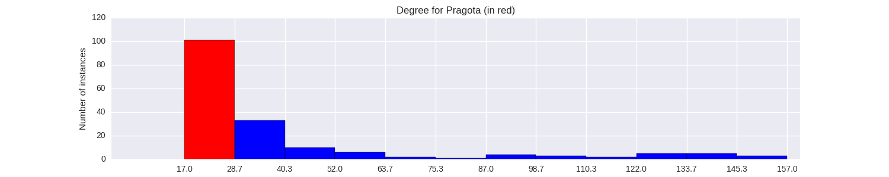

Quantiative Wayang Dictionary
Pragota
Terms of address: Patih
Type: Human
Origin: Java
Notes on the Sanskrit version: Not mentioned in the Indian Mahabharata.
Alternative names: Pergota
Description in the Javanese version: He was the patih of Mandura during the reign of Baladewa. His younger brother [Prabawa] was the interior minister for the same ruler. Pragota's demeanor was characterized by calmness and joy. He rarely took offense in what others said, even though his speech was rough and he had a loud laughter. Therefore, his character contrasted with that of his king Baladewa, who trusted him for that very reason. Other versions have him as the illegitimate son of Basudewa with [Ken_Sagupi], or of [Antagopa] with [Ken_Sagupi], or of Ugrasena with [Ken_Sagupi]. His siblings can therefore include [Adimanggala], Dewi Setyaboma, Setyaki,Udawa and [Larasati]. He died after the Baratayuda war in a fight involving [Trah_Yadawa], [Wresni] and [Andaka].
Found in the follwing lakon (stories):
Family relationships
Father: Saragupita
Siblings: Prabawa
More information
Sources: Ensiklopedi Wayang Purwa, p. 406; Mengenal Gambar Tokoh Wayang Purwa, p. 191; Sejarah Wayang Purwa, pp. 140-141; Ensiklopedi Wayang Indonesia, p. 159 (Vol. VII); Rupa dan Karakter Wayang Purwa, pp. 924-925
Network measurements for Pragota
| Measurement | Value | |
|---|---|---|
| Degree | 24.0 |  |
| Weighted Degree | 25.0 |  |
| Closeness Centrality | 0.537037037037 |  |
| Betweeness Centrality | 0.0 |  |
| Eigenvector Centrality | 0.197342584089 |  |
{kind=link}
Characters in the same adegan as Pragota
| Character | Link weight |
|---|---|
| Character | Link weight |